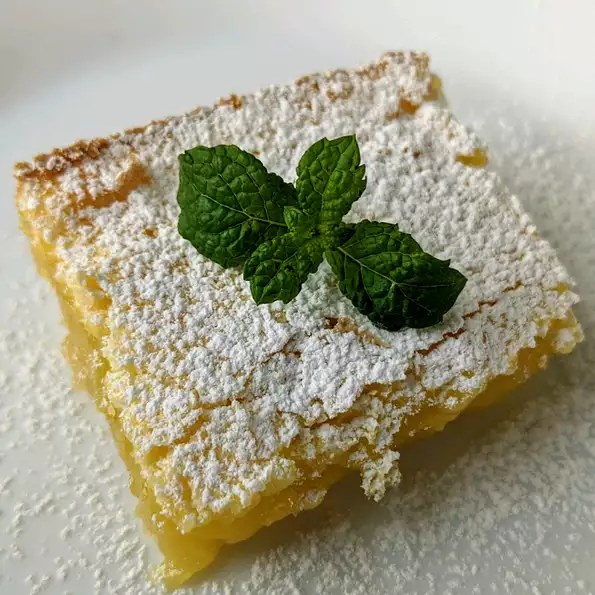

Chef John's Lemon Bars

Description
This is one of my favorite cookies of all time, although technically they're closer to a pie than a cookie. Nothing prepares you for that intense, awesome sweet-tart lemon flavor and custard, perfectly contrasted against that crisp, sweet buttery shortbread cookie.
Ingredients
For the shortbread crust:
- 1 cup all-purpose flour
- ½ cup unsalted butter at room temperature
- ¼ cup confectioners' sugar
- ¼ teaspoon vanilla extract
- ¼ teaspoon salt
For the lemon layer:
- 2 large eggs
- 1 large egg yolk
- 1 cup white sugar
- 2 tablespoons all-purpose flour
- ¼ cup freshly squeezed lemon juice
- 1 tablespoon freshly grated lemon zest
- 1 teaspoon confectioners' sugar, or to taste
Directions
- Preheat an air fryer to 400 degrees F (200 degrees C) for 7 minutes.
- Meanwhile stand corn cobs on the end, and with a sharp knife (I used a wüsthof nakiri) cut each ear down the middle. Place corn cob halves flat on a cutting board and cut in half lengthwise (you will get a total of 4 'ribs' per ear of corn).
- Spray each corn rib with non-stick spray. Sprinkle 2 tablespoons of seasoning over the 16 corn ribs.
- Air fry corn ribs in batches for a total of 12 minutes. Remove from air fryer.
- Drizzle crema con sal over corn 'ribs' and sprinkle with cotija cheese and remaining seasoning. Garnish with chopped cilantro.
Return to Home